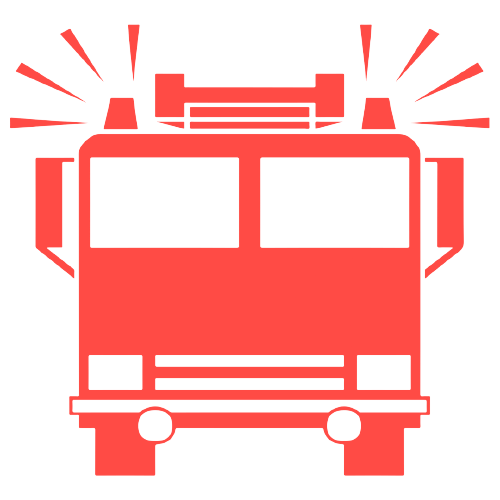

5 Ways on How to Prevent Fires in Your Home |
|
|---|---|
 Keep Children and Pets Away from Heat Sources |
Children and pets are curious beings, but sometimes too curious can lead to devastating consequences. If they play around with equipment that produce heat, immediately stop them from doing so and set up a way to not let them reach that certain object again. |
 Avoid Using Extensions |
Extensions may be a convenient thing to use, but they also impose higher risks of starting fires. Always try to plug directly into the outlet and not into any extension. However, if you cannot do so, be responsible with your extension cords and modify them to ensure safety in your homes. |
 Never Leave Fires Unattended |
Whether it may be a small or a large fire, never leave that fire unattended. Always keep your eyes on the fires you ignite. This way, you can easily tell if something is wrong with it and get yourself and others to safety. Even the smallest candles can cause a house fire. |
 Keep Flammable Items Away from Flames |
Things like paper, towels, and any cloth away from flames. These certain items can be easily lit up by fire, therefore making them flammable items. If one of these items is on fire, immediately extinguish it before it could spread to other flammable objects. |
 Don't Forget to Turn Off Appliances |
For those who are quite forgetful, feel free to set a reminder to turn off everything that you use which radiate heat after you're done using them. If you leave one of these appliances on for a long period of time, the chances of a fire starting get higher by the minute. |
